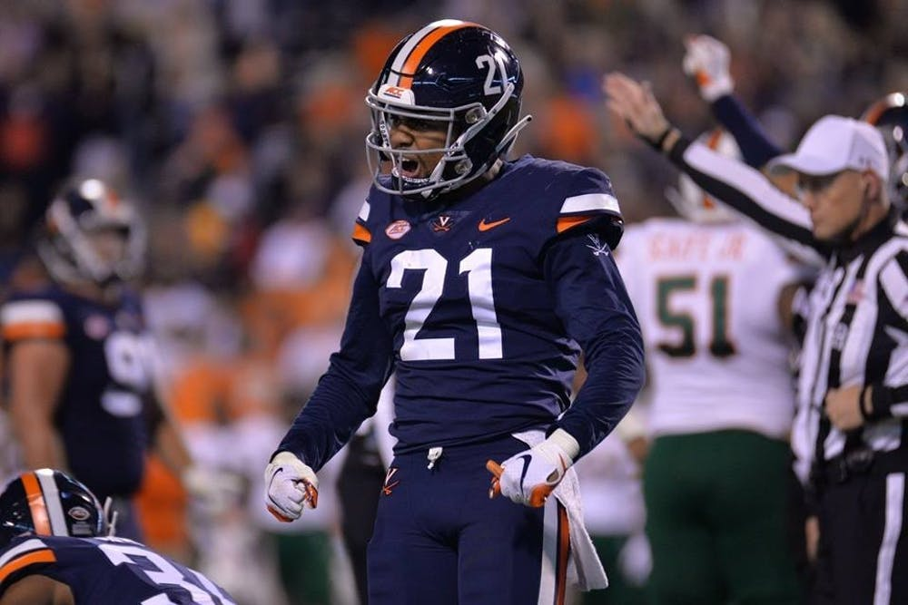

By Chad Whych | 03/04/2019

Former Virginia strong safety Juan Thornhill impressed spectators and scouts with a strong performance at the NFL Combine Monday, held at Lucas Oil Stadium in Indianapolis, In. Held from Feb. 26 to March 4, the Combine is an invite-only showcase of the some of the best players entering the NFL Draft, who undergo a series of physical and mental tests in front of NFL coaches, general managers and scouts.
While he performed well in all areas, Thornhill’s jumping prowess stood out after he posted an impressive 44 inches in the vertical jump and 11.75 feet in the broad jump. Both of these numbers led the safety position. His mark in vertical jump was only two inches shy of matching the combine record.
His stellar performance, however, wasn’t limited to the vertical and broad jump — Thornhill performed well throughout the entire Combine. He ran a 4.42 second 40-yard dash, ranking fifth among safeties. He also capped out at 21 reps of 225 pounds on the bench press, ranking second-best among safeties.
Thornhill’s performance at the Combine will certainly have a positive influence on his draft stock — that said, he came into the Combine with an already-impressive reputation. Many coaches and scouts like his ball-hawking instincts and fluidity at multiple positions — at Virginia, Thornhill showed he was capable of playing both cornerback and safety. He has also possessed great confidence in his ball-handling abilities.
“When the ball is in the air I am planning to out jump the receiver and go get it,” Thornhill said at the Combine.
Scouts believe this playing style will translate well to the NFL.
“We look for safeties who can take it away, and that’s what he does,” an anonymous NFL scout said. “It wouldn’t surprise me if a team drafted him to move him back to corner since he’s long with ball skills.”
The next step for Thornhill will be Virginia’s NFL Pro Day. The Pro Day will be held March 28th at 8:30 a.m. in Charlottesville, Va. After such a strong performance, many scouts should be coming out to watch Thornhill work out, in addition to scouting other Cavaliers looking for NFL attention.
If he continues to prove himself to scouts, Thornhill’s name might be called on the first day of the NFL Draft in Nashville, Tenn.